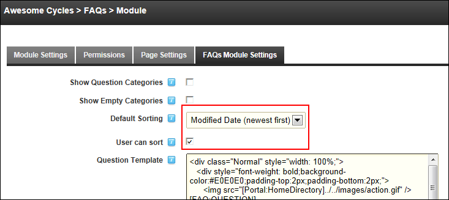

Setting the Default Sorting Order of FAQ's
How to set the default sort order for FAQ's in the FAQs module.
-
- Select the FAQs Module Settings tab.
- At Default Sorting, select from the following sorting options:
- Predefined Order: Select to sort FAQ's according to the order predefined by an Administrator or Page Editor. These users can set the order of FAQs using up and down arrows that are visible in edit mode.
- Modified Date (newest first): Select to sort FAQ's according to the date they were last modified from newest to oldest.
- Modified Date (oldest first): Select to sort FAQ's according to the date they were last modified from oldest to newest.
- Popularity (highest first): Sorts FAQ's from the most popular to least popular. Popularity is rated by the number of times the FAQ has been clicked.
- Popularity (lowest first): Sorts FAQ's from the least popular to the most popular. Popularity is rated by the number of times the FAQ has been clicked.
- Creation Date (newest first): Select to sort FAQ's according to the date they were first created from newest to oldest.
- Creation Date (oldest first): Select to sort FAQ's according to the date they were first created from oldest to newest.
- At User Can Sort, to display the "Select Sort Order" field that allows users to change the default sort order - OR - to disable.

-
Click the OK button to confirm.